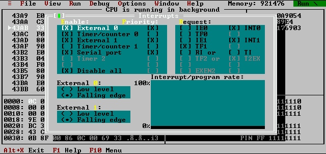

Software simulator for MCS51
This screenshot demonstrates window which displays interrupt system of
the microcontroller. Interrupt enable register and priority register
as well as interrupt request bits are displayed in this window. Note
that if you set some request bit during simulation and interrupt is
enabled, the CPU will accept the interrupt and responding to it by
starting the service routine.

The `Interrupt/program rate' pane shows ratio of execution time of
main program and interrupt service routines. Content of this pane is
not saved if you close tha window which means that measure of the
ratio is restarted every time you reopen the window.